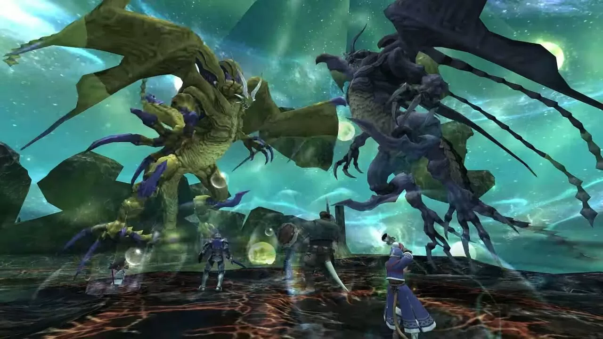
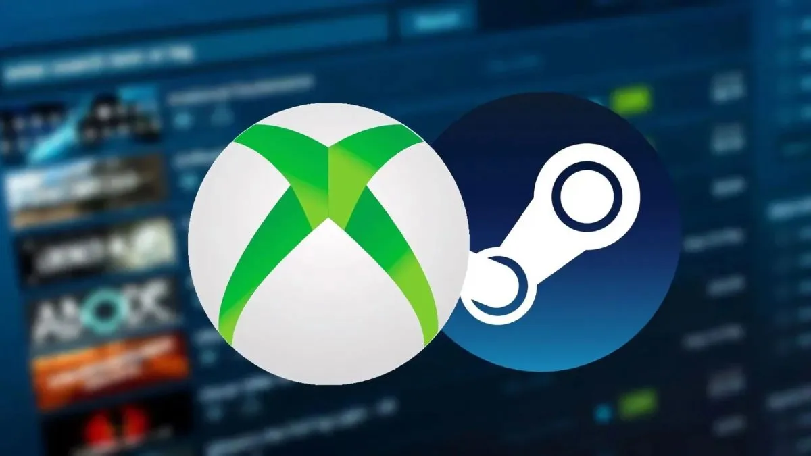

Grand Theft Auto VI: El CEO de Take-Two explica las razones del retraso
16 de Mayo 2025

El lanzamiento del esperado videojuego Grand Theft Auto
VI se ha convertido en uno de los temas más discutidos en el
mundo del entretenimiento digital. Su nueva fecha de salida, anunciada
para mayo de 2026, ha generado una avalancha de reacciones en la
comunidad de jugadores a nivel global.
Leer mas
Este es el motivo por el que Nintendo decidió que Mario Kart World
sea el gran juego de lanzamiento de Nintendo Switch 2
18 de mayo de 2025

Cuál es el motivo por el que Nintendo ha escogido Mario Kart como buque insignia
del lanzamiento de Switch 2? Nate Bihldorff, vicepresidente senior de desarrollo
de producto en Nintendo, ha hablado con el medio Inverse sobre ello, destacando que
"es uno de los juegos más accesibles posibles"
Leer mas
La “vuelta al cole” de Lara Croft: Tomb Raider IV-VI Remastered
tendrá una edición física en septiembre
19 May 2025

Los amantes del formato físico tienen una nueva cita el próximo 19 de septiembre de 2025.
Este día se lanzará la versión física de Tomb Raider IV-VI Remastered en España, donde
llegará de la mano de Meridiem Games.
Leer mas
Salió hace 23 años, pero Square Enix sigue actualizando Final Fantasy XI y no con pocas novedades
19 May 2025

Lanzado originalmente en 2002 para PS2 y PC, a más de uno seguro que os sorprenderá saber
que el MMROPG Final Fantasy XL sigue vivo y activo dos décadas después.
Leer mas
Steam podría llegar a Xbox y cambiar para siempre el futuro de los videojuegos
19 May 2025

El universo de los videojuegos vive una transformación constante, y Microsoft parece estar
lista para dar un paso que sacudiría el tablero. Según una filtración reciente, Steam podría
integrarse oficialmente a Xbox.
Leer mas